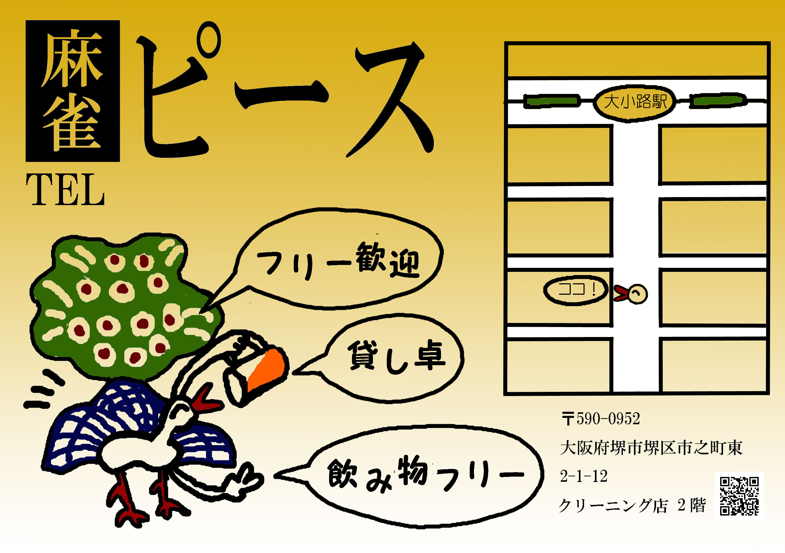

お仕事で制作した作品
works>お仕事で制作した作品雀荘チラシ
PhotoShop

知り合いの紹介で麻雀店のチラシを制作し、採用されました。イラストは普段から描いていたものの、チラシのデザインは初めてだったため、何度もコミュニケーションを重ねながら、完成までとても時間がかかってしまいました。Illustratorも使い始めたばっかりだったため、グラデーションのつけ方も知りませんでした。かっこいいデザインとは言えませんが、左のキャラクターは気に入っています。


雀荘チラシ
PhotoShop
知り合いの紹介で麻雀店のチラシを制作し、採用されました。イラストは普段から描いていたものの、チラシのデザインは初めてだったため、何度もコミュニケーションを重ねながら、完成までとても時間がかかってしまいました。Illustratorも使い始めたばっかりだったため、グラデーションのつけ方も知りませんでした。かっこいいデザインとは言えませんが、左のキャラクターは気に入っています。